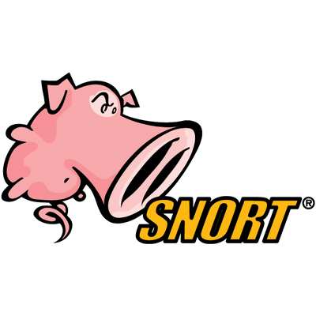
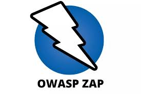
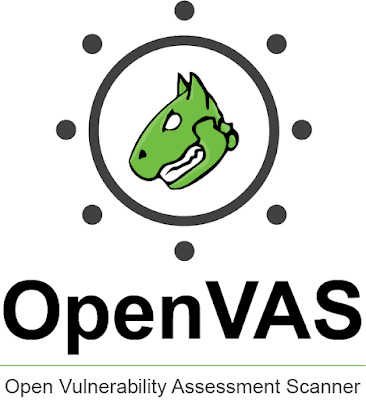
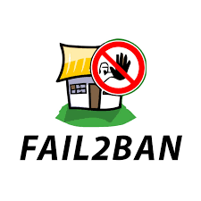

Rober J. Colmenares G.
- Rober Colmenares
- 16/07/1998
- Venezolano
- Soltero
- Tec. Ciberseguridad
Actualmente, estoy estudiando Ciberseguridad en el Instituto IACC y complementando mi formación con un curso de Desarrollo full stack js en Desafio Latam. Mi objetivo es combinar ambos campos para crear soluciones innovadoras y seguras en el ámbito digital. Tengo una sólida base teórica y práctica en seguridad informática, así como habilidades en desarrollo web que me permiten entender y aplicar las mejores prácticas en la creación de aplicaciones seguras y funcionales.
Historial académico
- Escuela primaria: Colegio Nacional de Judibana
- Escuela Secundaria: Liceo Nacional de Judibana
- Universidad: IACC Ing. Ciberseguridad
- Desafio Latam: Desarrollo Full Stack JavaScript
Certificados y cursos
- Hardware y software - Venezuela 2014
- Hardware y software CISCO - Chile 2023
- Redes CISCO - Chile 2024
Ciberseguridad
Soy un profesional de ciberseguridad junior apasionado por proteger la información y los sistemas críticos de las amenazas cibernéticas. Con una sólida formación en ciberseguridad adquirida en el Instituto IACC
Durante mi formación, he adquirido conocimientos profundos en áreas como la gestión de riesgos, la seguridad de redes, la criptografía y la respuesta a incidentes. Mi enfoque se centra en implementar medidas preventivas y reactivas para asegurar la integridad, confidencialidad y disponibilidad de los datos.




Full Stack
Soy un desarrollador full stack junio en proceso apasionado por crear soluciones web dinámicas y efectivas. Con una sólida base en HTML, CSS, JavaScript y PHP, y actualmente profundizando mis conocimientos a través de un curso de desarrollador web
Mi enfoque está en la creación de sitios web y aplicaciones que no solo sean visualmente atractivas, sino también eficientes y fáciles de mantener.


Proyectos Realizados
Contacto